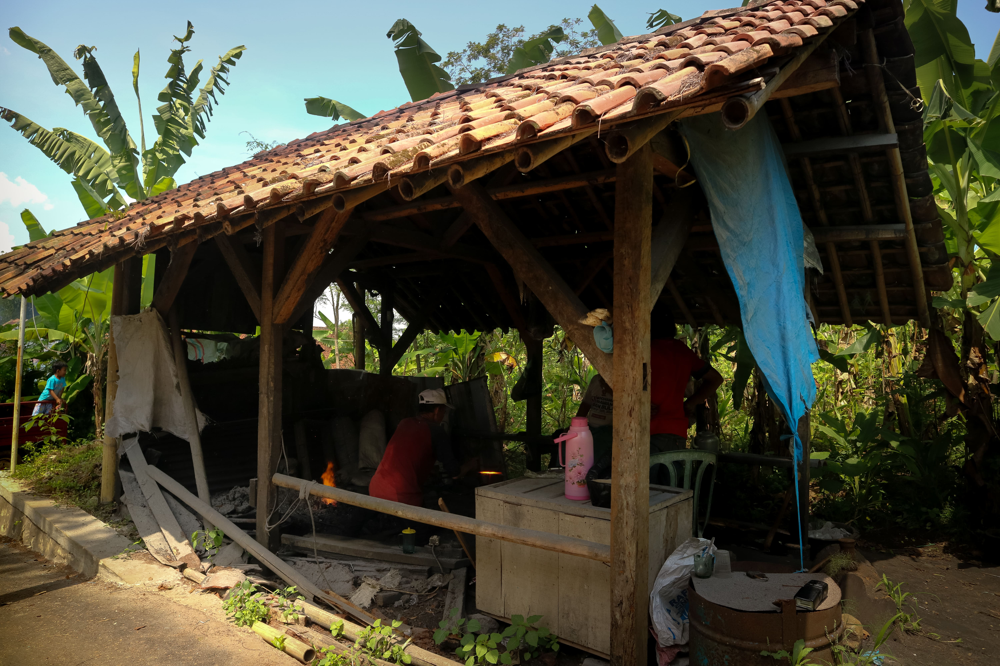
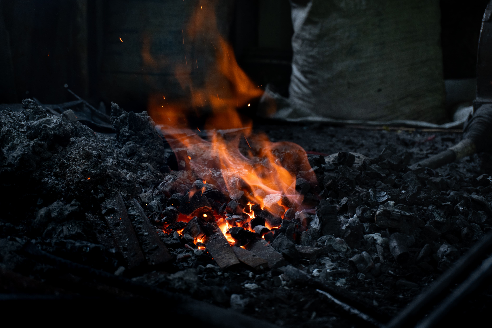
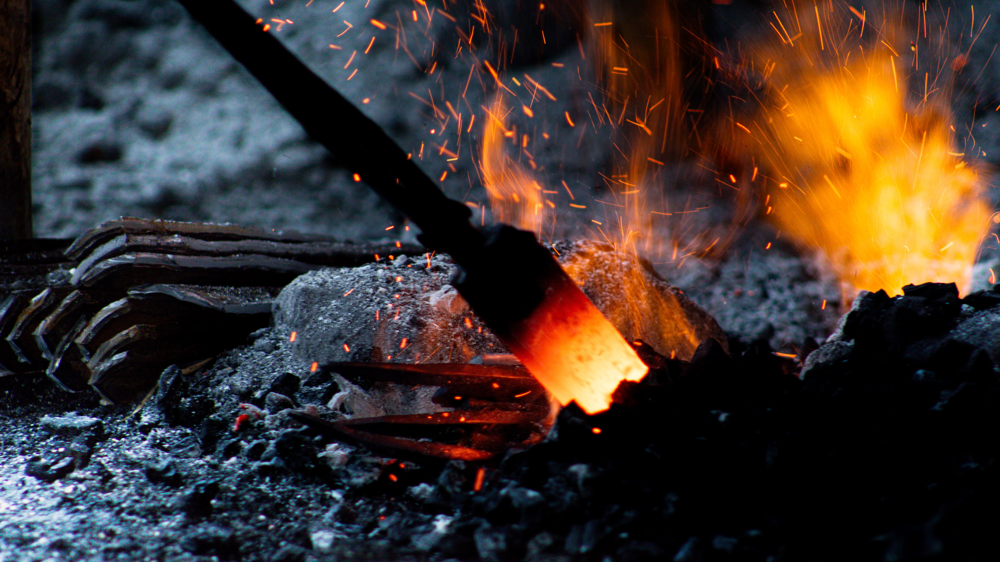
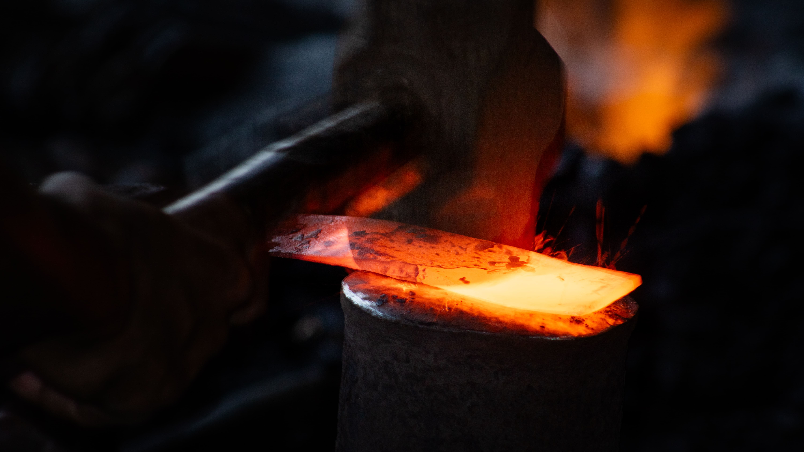
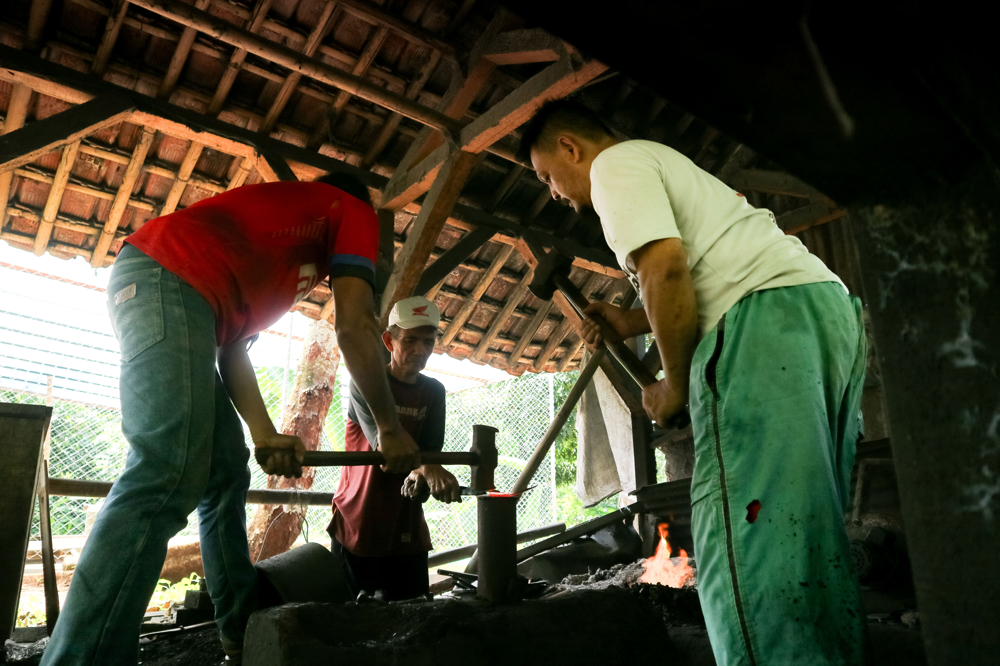
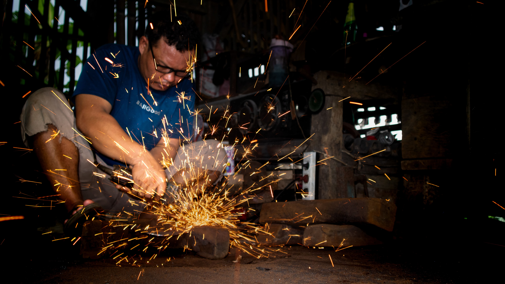
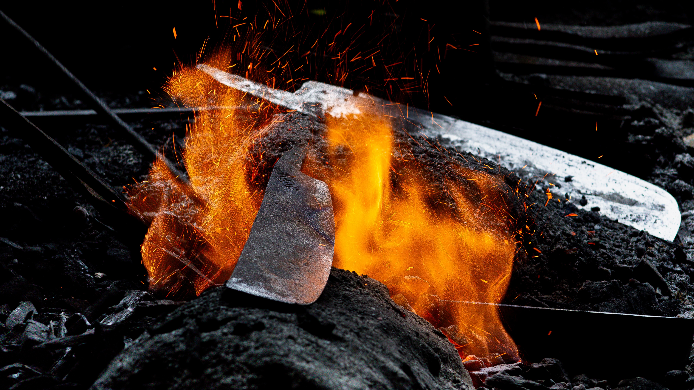
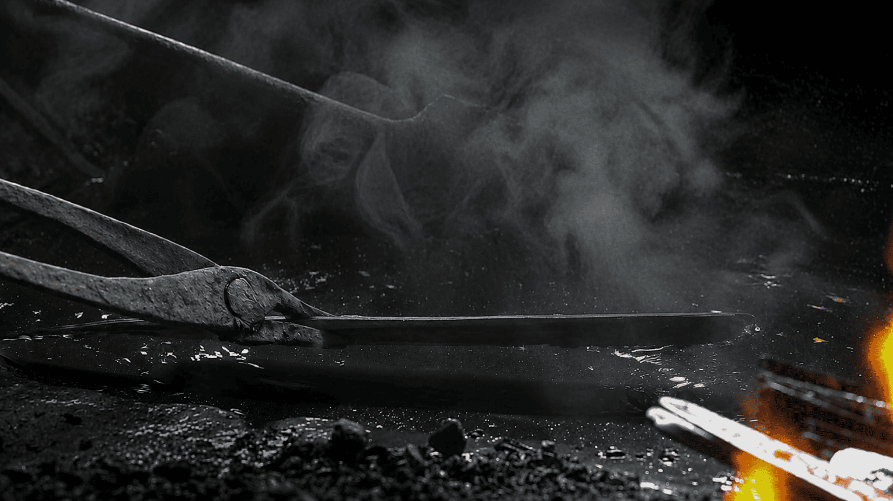
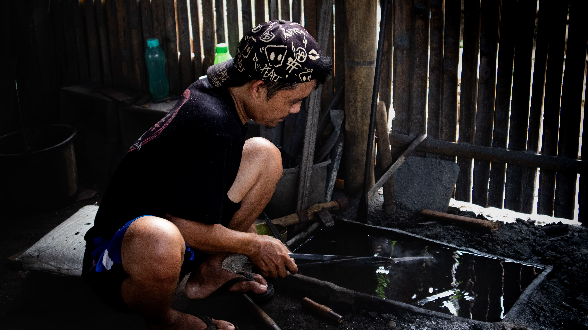
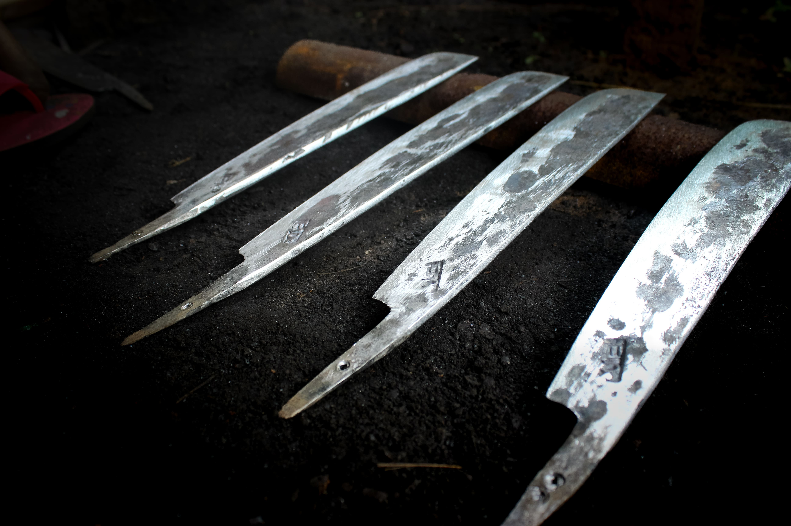

Galeri Foto
Potret Gosali
Desa Taraju

Suasana Gosali
Potret Bagian Depan
Proses Pembakaran Bahan
Tahap pemanasan besi di atas bara api hingga membara sebagai awal proses penempaan bilah bedog tradisional.
Proses Pembakaran Bahan
Besi yang memerah akibat panas bara menjadi penanda awal proses penempaan sebelum dibentuk menjadi sebilah bedog tradisional.
Proses Penempaan
Close up hentakan palu pada bilah panas yang memperlihatkan tenaga, ketelitian, dan ritme kerja tradisional para pandai besi Taraju.
Teknik Tempa Tradisional
Proses pembentukan bilah bedog secara manual melalui hentakan palu dan panas bara api yang diwariskan turun-temurun oleh para pandai besi Taraju.
Proses Pengecapan
Tahap pemberian tanda atau cap pada bilah bedog sebagai identitas hasil karya para pandai besi Taraju.
Proses Penghalusan
Tahap penghalusan bilah menggunakan gurinda untuk merapikan bentuk dan permukaan bedog hasil tempa.
Proses Pembakaran Bilah
Bilah bedog dipanaskan hingga membara sebelum memasuki proses nyipuh untuk memperkuat hasil tempa.
Proses Nyipuh
Tahap pencelupan bilah bedog ke dalam air untuk memperkuat karakter dan ketajaman hasil tempa.
Proses Nyipuh
Pencelupan bilah bedog ke dalam air.
Sebilah Bedog Taraju
Hasil akhir dari proses penempaan tradisional yang dibentuk melalui ketelitian, kesabaran, dan warisan keahlian para pandai besi Taraju.